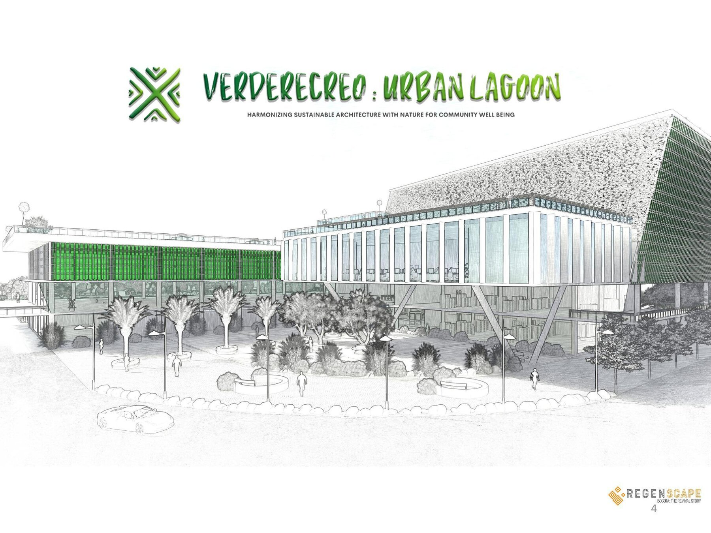
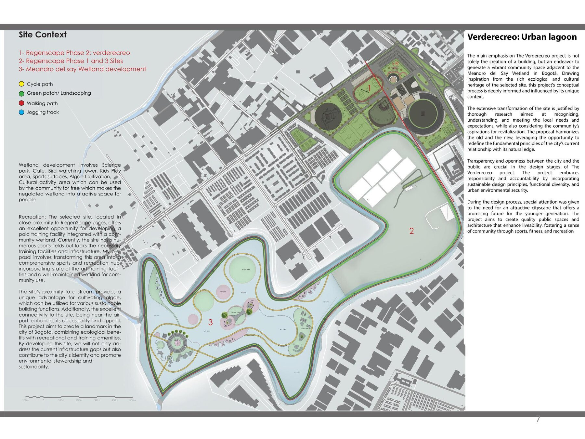
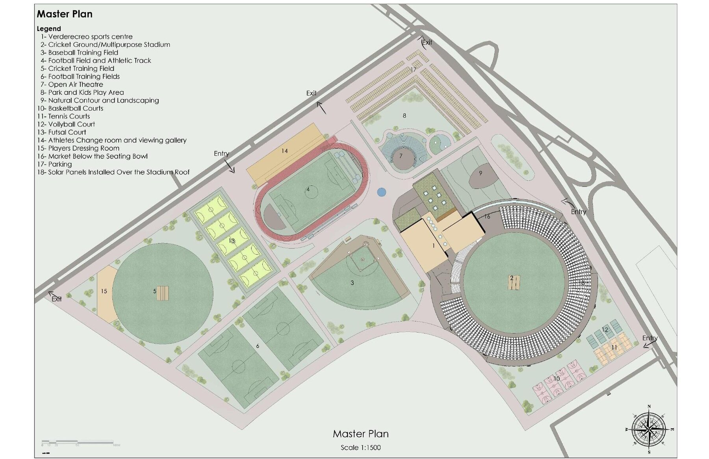
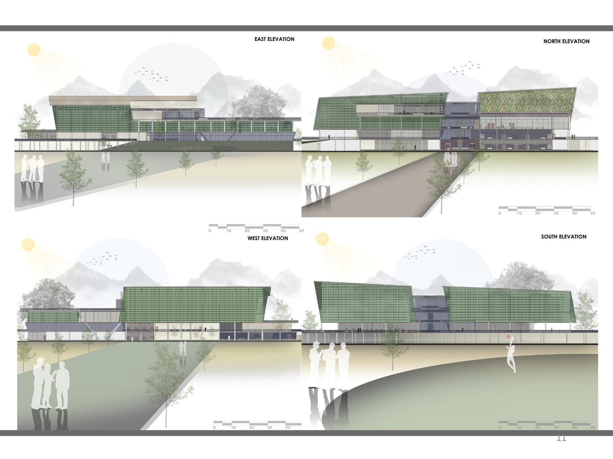
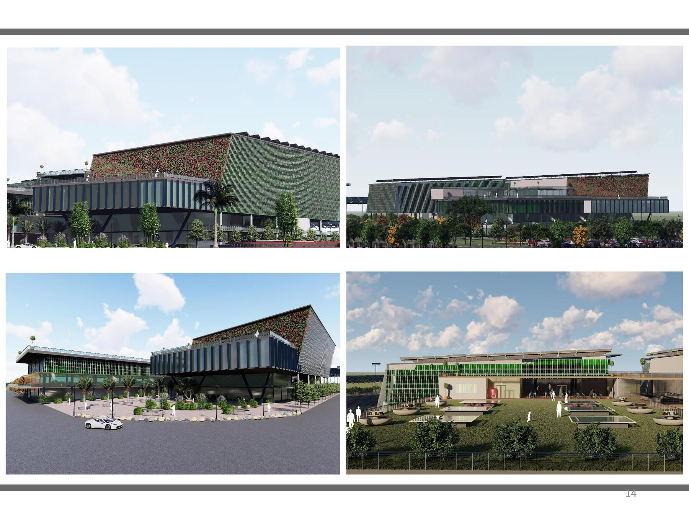
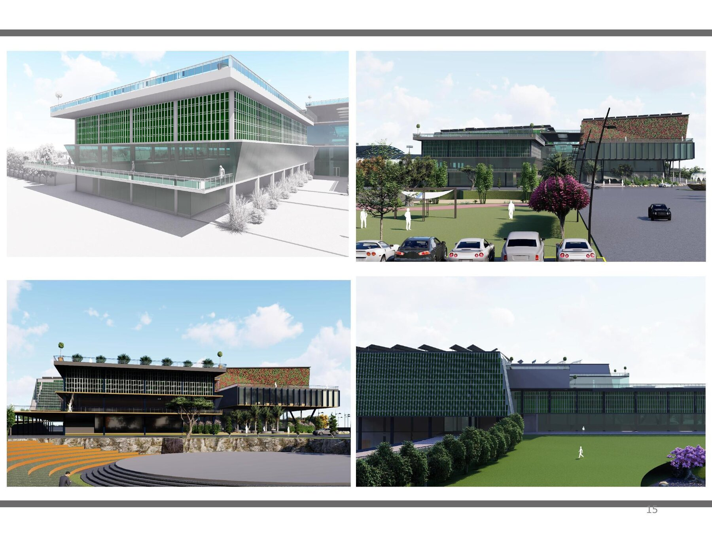
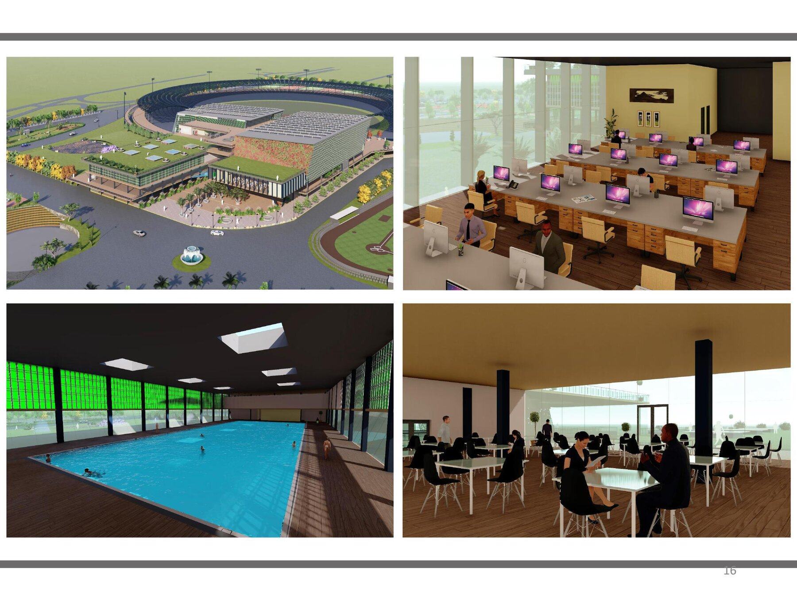

A regenerative sports and recreation hub harmonising sustainable architecture with the Meandro del Say wetland.
Verderecreo is Phase 2 of a three-part thesis, RegenScape: Bogotá — The Revival Story, which uses architecture to support the rehabilitation and revitalisation of individuals with criminal backgrounds through vocational training, sport and recreation. Phase 2 pairs a competitive sports and recreation campus with the ecological restoration of the neglected Meandro del Say wetland — turning it into a public science park, bird-watching tower and community algae-cultivation area.
The building itself is bio-responsive: a south-facing glazed façade hosts photovoltaic bioreactors that generate up to 55% of the building’s electricity, a green roof buffers rainwater and moderates internal temperature, and a ground-source heat pump and chilled beams cut operational energy loads. My thesis work covered the masterplan, floor plans, sections, structural axonometrics and sustainability strategy for the scheme, aligned to SDGs 3, 4 and 11.





